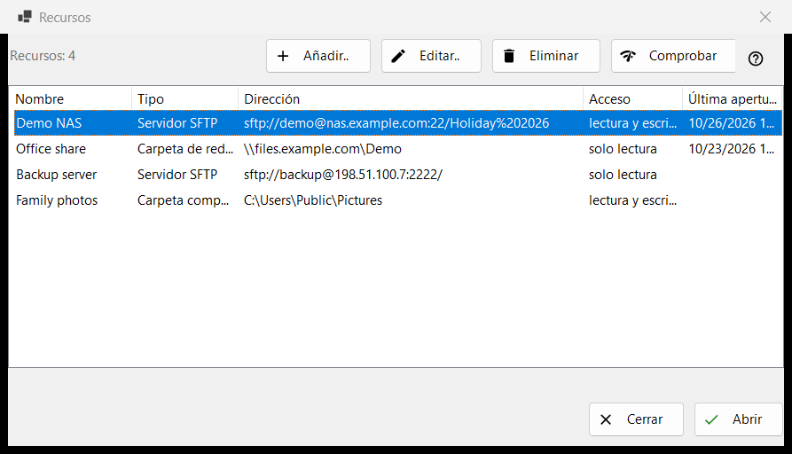
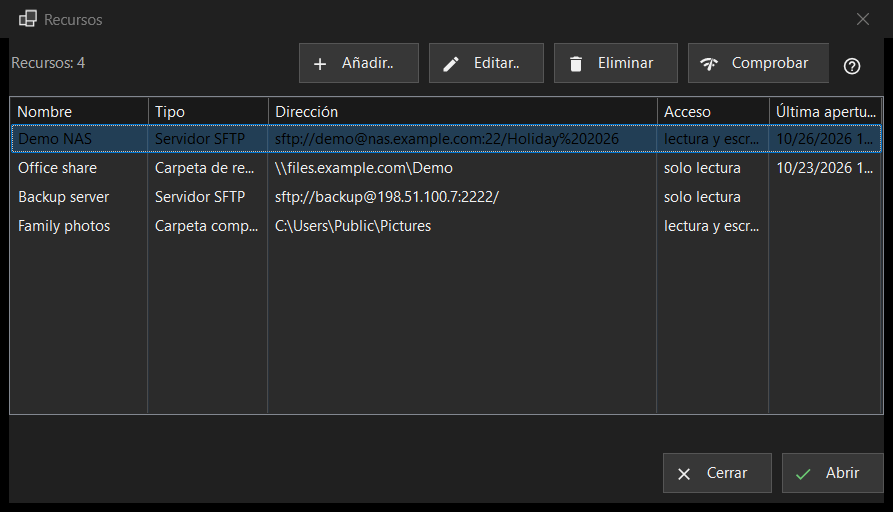

Recursos
Para qué sirve
La lista de servidores y carpetas de red que el programa puede abrir: servidores SFTP, carpetas de red de Windows (SMB) y carpetas que Share Manager comparte desde este equipo. Se abre desde «Administrar recursos..» en el menú de carpetas; la misma lista está en la página «Servidor y recursos» de la ventana de Configuración.


En este orden
- Pulse «Añadir..» y rellene los datos del servidor, o traiga un archivo de configuración con el botón «Más».
- Seleccione la fila nueva y pulse «Comprobar».
- Pulse «Abrir» o haga doble clic en la fila: el programa se conecta y muestra la carpeta del servidor.
- Use «Editar..» para cambiar una dirección o una contraseña y «Eliminar» para olvidar un recurso.
Los elementos
La lista
Columnas: Nombre, Tipo, Dirección, Acceso y Última apertura. El tipo es «Servidor SFTP», «Carpeta de red (SMB)» o «Carpeta compartida (Share Manager)»; el acceso indica «Solo lectura» o «Lectura y escritura». Una línea bajo la lista cuenta los recursos y, si no hay ninguno, la ventana muestra una sugerencia y un botón «Añadir..». Editar, Eliminar y Comprobar (y Abrir en la fila inferior de la ventana Recursos) necesitan una fila seleccionada; mientras no la haya, su información en pantalla dice «Seleccione primero un recurso de la lista».
Añadir.. y Editar..
«Añadir..» abre el formulario de un recurso nuevo y «Editar..» el del recurso seleccionado. Una contraseña escrita allí se guarda cifrada para su cuenta de Windows, nunca en la propia lista.
Eliminar
«Eliminar» pregunta antes, y la respuesta predeterminada es No. La pregunta nombra el recurso y dice que también se elimina la contraseña guardada para él, mientras que los archivos del servidor no se tocan.
Comprobar
«Comprobar» prueba la fila seleccionada sin abrirla. En un servidor SFTP intenta todas las direcciones conocidas del recurso y informa de cada una como host:puerto con un veredicto: una respuesta SSH viva hace que la comprobación sea correcta, un puerto abierto que no es SSH es una advertencia y el silencio es un fallo. No se envía ninguna contraseña. En una carpeta de red abre el recurso compartido con la contraseña guardada y lee su carpeta superior; si no hay contraseña guardada, le pide que la introduzca con «Editar..». En una fila de Share Manager solo mira si la carpeta existe en este equipo.
Abrir
«Abrir», o un doble clic en una fila, entrega el recurso al programa, que se conecta y muestra su carpeta. Si no hay contraseña guardada, o la guardada es rechazada, primero aparece una ventana pequeña que la pide.